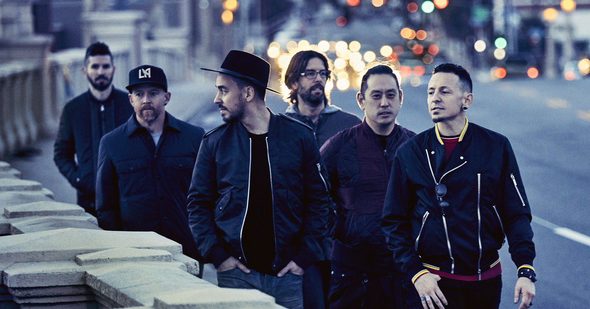
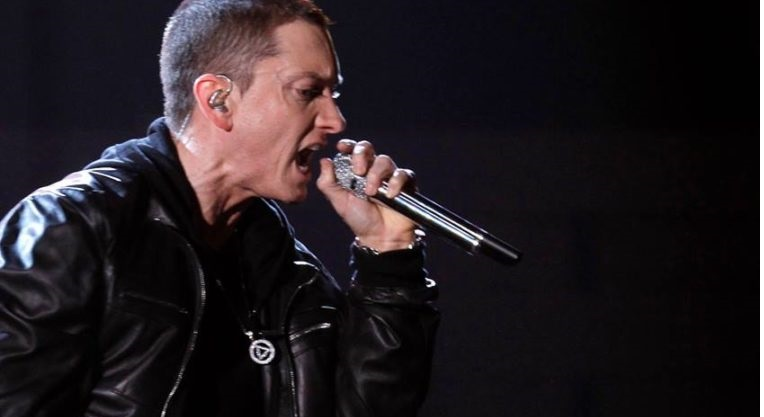

My never-ending love for music exists since I was nine.
First of the bands/artists I was introduced to were Linkin Park, Green Day, Eminem, Simple Plan and others. I quickly developed interest in Rock and Rap music. My favourite genre
is Alternative Rock and I've discovering many new artists recently (They're new to me :P). Skillet, All Time Low, Bring Me The Horizon, Joyner Lucas are some of them which
I feel are way too underrated in spite of their awesome work. You can check them out if you want to!
I play a couple of instruments too. I'm a begginer at keys although I've performed twice
in front of audience. I started drumming after I joined college and learnt it at a okayish level in the first semester. The click alongside is a pic from a band performance of me and
some of my friends in a competition in our college. We won 4th position out of 18 teams thanks to the extra-ordinary performance by our band's vocalist Harmeet Saluja. Love you man!
 In my 14-16s Rap music had me overwhelmed. Especially Eminem's songs
felt relatable and also freaking awesome! I had a Rap-Fever at this time as I learned to rap almost 16 of his songs word-to-word. 25 To Life, Love The Way You Lie, Lose Yourself, Fast Lane, No Love were some
of them. Alphabet Aerobics by Blackalicious and the super-sonic speed verse in Rap God are the two tracks I usually rap when someone asks me to.